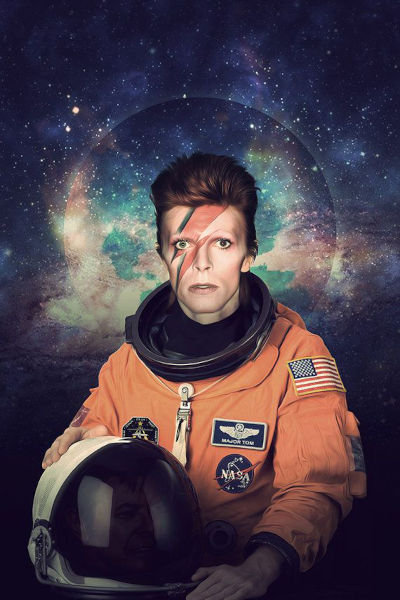

Ground Control to Major Tom
Ground Control to Major Tom. Take your protein pills and put your helmet on. Ground Control to Major Tom (ten, nine, eight, seven, six). Commencing countdown, engines on (five, four, three). Check ignition and may God's love be with you (two, one, liftoff). This is Ground Control to Major Tom. You've really made the grade. And the papers want to know whose shirts you wear. Now it's time to leave the capsule if you dare. This is Major Tom to Ground Control. I'm stepping through the door.
And I'm floating in a most peculiar way. And the stars look very different today. For here.
Persistence is very important. You should not give up unless you are forced to give up.
Am I sitting in a tin can. Far above the world. Planet Earth is blue. And there's nothing I can do. Though I'm past one hundred thousand miles. I'm feeling very still. And I think my spaceship. knows which way to go. Tell my wife I love her very much she knows. Ground Control to Major Tom. Your circuit's dead, there's something wrong. Can you hear me, Major Tom? Can you hear me, Major Tom? Can you hear me, Major Tom? Can you "Here am I floating 'round my tin can. Far above the moon Planet Earth is blue And there's nothing I can do
 Read more about Major TomI don’t know where I’m going from here, but I promise it won’t be boring. You should accept cookies.